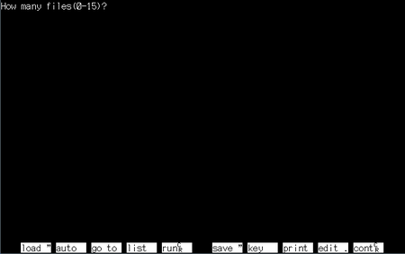

かならずお読みください →

しゃべる文字盤のつくりかた
3 BASICとVisualBasicとVBA プログラムについて

BASICは、1980年代日本のパソコン初期から広く使われ、初心者向けコンピュータプログラム言語として普及しました。当時のNECのパソコン、PC-98などではパソコンを起動すると標準でDiskBASICが起動し、事実上パソコンを使うこととプログラム言語BASICを使うことは同じことを意味しました。ですから正しくは、BASIC以外選択肢がなかったので使っていたとの表現がより適切と思われます。その後、MS-DOSの登場によりN88BASICとともにMS-DOSに対応した多様な言語が使われるようになりました。
90年代、Windows時代の初期にWindowsアプリケーション開発用言語として、BASICをベースとしてこれに、窓を開く、閉じる、マウスクリックなどWindows関連の機能を加えたプログラム言語、VisualBasic（VB）が発表されました。また、これをもとにしてofficeアプリケーション用のマクロ言語としてVisual Basic for Applications（VBA）が作られました。 これらのプログラム言語を用いて多くのWindowsアプリケーションソフトが作られました。これにより、パソコンの用途は次々に広がり、パソコンの普及が急速に進む事になりました。 この時期は業務効率化のため職場にWindowsパソコンが急速に普及しました。この結果、手書き文書のワープロ書式への置き換えなど、多くの業務がパソコン対応に変更（言うなる電子化）されました。業務文書と同様に多くの紙帳票類も電子化されエクセルに置き換えられました。
ワープロによる紙文書の電子化は多くのメリットをもたらしました。表計算ソフトではこれに加えて、項目を入力すると自動的に結果が計算、表示される自動計算や大量データの一括処理を可能にするマクロ処理プログラムが組み込まれるなど、コンピュータの特徴を生かした機能が盛り込まれました。 これらの機能は業務の合理化、省人化、コストダウンを可能にするものでした。電子化に多くの企業が投資し、電算化、ペーパレス化などとも呼ばれました。このような役割を担ったのが表計算ソフトとマクロ言語、すなわちエクセルとVBAでした。これが事務業務の大きな変化の始まりでした。
VBAはVBから派生した言語ですので、はじめの頃は双方の相違はそれほど大きくありませんでした。当時、Windows98、Me、2000とWindowsの機能が強化拡充されるのに合わせてVBもバージョンアップされました。この間、Microsoft office（含エクセルとVBA）も、95,97,2000とバージョンアップされました。2000年ころから徐々にコストのかかる業務用マクロの更新に企業ユーザから難色が示すようになりました。そして従来の業務用マクロを新しいバージョンのエクセルでも使えるようにという要望が高まりました。Microsoft社は大手顧客のこの要望を無視できず以後VBAはVBとは別のゆっくりした進化（古い仕様を引きずる進化？）、のみちを歩み、双方の相違が拡大していきました。VBは後にVB.NETと進化して行きましたが、VBAは徐々に取り残されていくことになりました。
ガラパゴスの珍獣のような立場になったVBAですが、見方を変えるとこれは利点にもなります。進化が遅いことは仕様があまり変わらず安定しているという意味です。一度作ったプログラムが比較的長期間使用できる、寿命が長いといえます。これは福祉機器をはじめとした特殊な用途にはありがたい特徴です。 （またVBAは昔のN88BASICにかなり近いので、PC98世代（1960年代生まれの工学系 パソコンPC98世代）にはずいぶんできる人材が大勢いるはずです。）
例えば、cドライブにファイル abc.dat を開いて 123 を書き込みファイルを閉じる例を3つの言語で表記すると以下のようになります。
N88BASICでは、
100 open "c:\abc.dat" for output as 1 110 write #1, 123 120 closeVBAでは、Open "C:\abc.dat" For Output As #1 Print #1, 123 Close #1Visual Basic.netでは、Dim fileno As Integer fileno = 1 Dim data1 As Integer = 123 FileOpen(fileno, "c:\abc.dat", OpenMode.Output) Print(fileno, data1) FileClose(fileno)となります。これを見ると、現在のVBAと30年前のN88BASICに共通点が多いことがわかります。 NECのPC-98で頑張った皆さんには、VBAは比較的取り組みやすい課題といえます。 若いエンジニアにはBASICの勉強を勧めにくいですが、若くないエンジニアの皆さんや、エンジニアでない若い人には取り組んでいただきたいと思います。
かつてはBASICはC言語に比べて機能の制約が多く何よりも処理速度で比較になりませんでした。情報系の人はBASICから離れて行きましたが、手軽に使えるBASICはWindows時代まであちこちで使われました。 今、.NETになり、基本的にどの言語でも同様の機能が発揮されていることになり、BASIC系はさらに生き残るようです。多くの言語が生まれ、消えて行きました。ところがBASICはこれから先も生き残るようです。実にしぶといものです。福祉機器にも時代を越えて生き延びるしぶとさを期待したいと思います。
他人任せにしないで自分の力で問題に挑戦しようという趣旨のため、 知識も経験も乏しい私が無謀にもこのような文章を書くことになりました。 さぞかし間違いや誤解や不適切な表現があちこちに存在し、お読みになった方々の顰蹙を買うことであろうと覚悟しております。もしよろしかったらどうぞご指摘ください。勉強して参りたいと思います。 よろしくお願いいたします。
2014/5/8 公開研究企画課リハ工学科にもどる